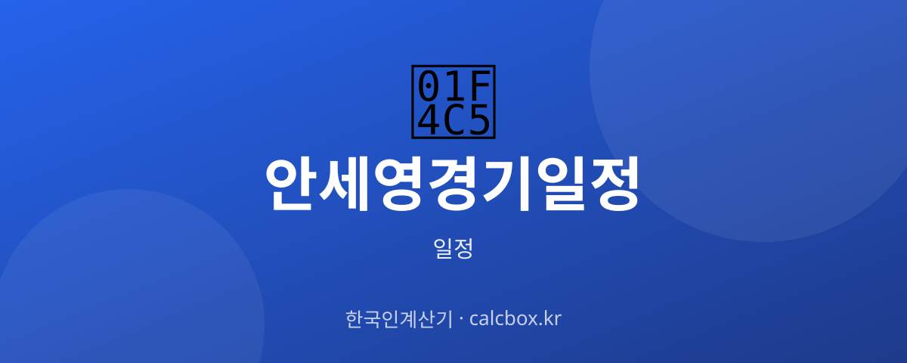

안세영 경기 일정 확인법 — 배드민턴 국가대표 대회 챙겨 보는 법
세계적인 배드민턴 선수 안세영. 어떤 대회에 출전하고 경기가 언제인지, 대회 단위로 일정을 확인하는 방법을 정리했습니다.

안세영 선수(배드민턴 국가대표) 일정, 무엇을 확인하나요?
배드민턴은 축구·야구처럼 매주 정해진 리그가 아니라 대회(투어) 단위로 일정이 돌아갑니다. 세계배드민턴연맹(BWF) 월드투어 대회들과 세계선수권·아시안게임·올림픽 같은 종합대회가 대표적입니다.
따라서 '안세영 경기 일정'은 곧 어떤 대회에 출전하는지, 그 대회에서 몇 회전에 언제 경기하는지를 확인하는 일입니다. 대진은 대회 중 승패에 따라 다음 경기 날짜가 정해지는 토너먼트 방식입니다.
최신 일정 확인하는 법
먼저 출전 대회를 확인한 뒤, 그 대회의 대진표(드로)에서 경기 회전과 시간을 봅니다. 포털 스포츠에서 선수 이름이나 대회명을 검색하면 일정과 결과를 볼 수 있습니다.
가장 정확한 대진·경기 시간은 대회 주최 측과 세계배드민턴연맹(BWF) 정보이며, 국내 소식은 대한배드민턴협회를 통해 확인할 수 있습니다.
- 네이버 스포츠 등 포털(대회 일정·결과)
- 세계배드민턴연맹(BWF) 공식 홈페이지
- 대한배드민턴협회
- 대회 중계 방송사/플랫폼
중계·관람·예매 정보
해외 개최 대회는 현지 시간 기준이라 한국에서는 시차만큼 다른 시간에 경기가 열립니다. KST 환산 시간을 확인하세요.
중계는 대회·시기에 따라 스포츠 채널이나 온라인 플랫폼에서 편성됩니다. 예선과 결승 라운드의 중계 편성이 다를 수 있으니 경기 전 확인이 필요합니다.
알아두면 좋은 포인트
토너먼트 특성상 이전 경기 결과에 따라 다음 경기 날짜·시간이 확정됩니다. 8강·4강·결승 일정은 대회가 진행되면서 정해지므로, 대회 초반보다 라운드가 올라갈수록 다시 확인하는 것이 좋습니다.
부상·컨디션·기권 등으로 출전이 바뀔 수 있어, 출전 명단과 대진은 대회 직전·직후에 다시 점검하는 습관이 도움이 됩니다.
자주 묻는 질문 (FAQ)
Q. 안세영 선수 경기는 어떤 주기로 열리나요?
정해진 매주 리그가 아니라 BWF 월드투어와 세계선수권·아시안게임·올림픽 같은 대회 단위로 열립니다. 출전 대회 기간에 여러 라운드를 치르는 방식이라, 먼저 출전 대회를 확인한 뒤 대진표로 경기일을 봅니다.
Q. 8강·결승 경기 시간은 언제 알 수 있나요?
토너먼트라 이전 경기 결과에 따라 다음 라운드 상대와 시간이 정해집니다. 대회가 진행되면서 확정되므로 라운드가 올라갈 때마다 대진표를 다시 확인하는 것이 정확합니다.
Q. 경기를 어디서 중계하나요?
대회와 시기에 따라 국내 스포츠 채널이나 온라인 플랫폼에서 편성됩니다. 예선과 결승 라운드의 편성이 다를 수 있으니 경기 전에 방송·플랫폼을 확인하세요.